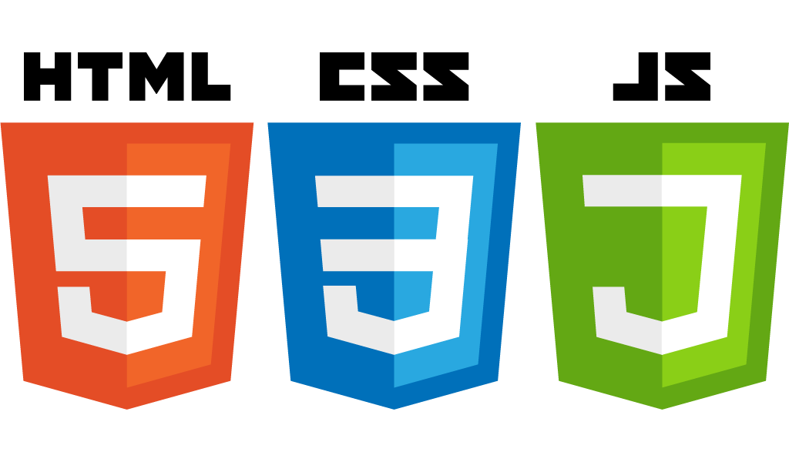
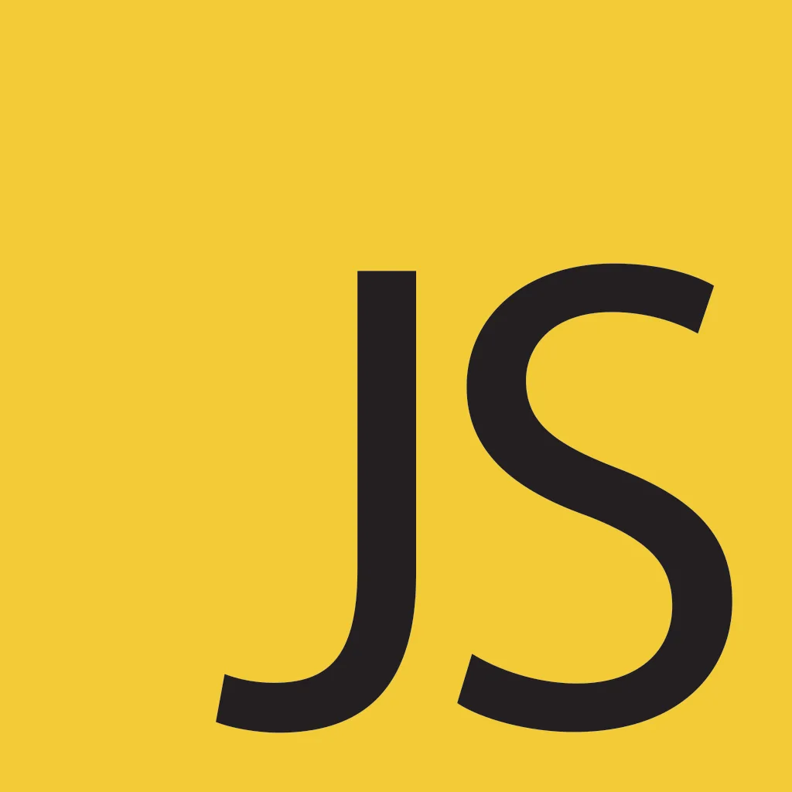

1. История создания
JavaScript — язык программирования, который часто используют при создании сайтов. Он появился в в компании Netscape. Его разработал Брендан Айк.
Сначала язык назывался Mocha, затем LiveScript, а позднее получил название JavaScript. Его создавали для того, чтобы веб-страницы могли реагировать на действия пользователя.
В появился стандарт ECMAScript. Он описывает основные правила языка. Сейчас JavaScript развивается и используется не только в браузерах.

2. Краткий обзор языка

JavaScript позволяет изменять содержимое веб-страниц, проверять данные в формах и реагировать на действия пользователя. Для работы с элементами страницы используется DOM (объектная модель документа).
Что можно делать с помощью JavaScript
- Изменять текст и элементы страницы.
- Показывать сообщения пользователю.
- Проверять введённые данные.
- Обрабатывать события мыши и клавиатуры.
Где применяется язык
- Интерактивные сайты.
- Веб-приложения.
- Серверные программы с Node.js.
Порядок работы с простым скриптом
- Создать HTML-страницу.
-
Добавить тег
<script>или подключить файл.js. - Открыть страницу в браузере и проверить результат.
| Понятие | Для чего нужно | Пример |
|---|---|---|
| Переменная | Хранит данные | let age = 19; |
| Функция | Выполняет действие | function hello() |
| Условие | Проверяет выражение | if (age >= 18) |
| Событие | Реагирует на действие | click |
| Основные понятия и примеры их использования | ||
JavaScript удобно изучать на небольших примерах, начиная с переменных, условий и функций.
3. Примеры кода
В примерах разными цветами выделены ключевые слова, строки, числа и комментарии.
Пример 1. Сообщение
Функция alert() показывает
небольшое окно с текстом.
// Вывод сообщения
let name = "Влада";
alert("Привет, " + name);Пример 2. Проверка условия
Оператор if позволяет выполнить
код при определённом условии.
let age = 19;
if (age >= 18) {
console.log("Совершеннолетний");
}Пример 3. Функция
Функция позволяет выполнять определённые действия и повторно использовать написанный код.
function sum(a, b) {
return a + b;
}
console.log(sum(2, 3));4. Использованные теги и CSS-свойства
HTML-теги
<a>, <abbr>, <article>, <aside>, <blockquote>, <body>, <caption>, <code>, <div>, <em>, <figcaption>, <figure>, <footer>, <h1>, <h2>, <h3>, <head>, <header>, <html>, <i>, <img>, <li>, <link>, <main>, <meta>, <nav>, <ol>, <p>, <pre>, <section>, <span>, <strong>, <table>, <tbody>, <td>, <tfoot>, <th>, <thead>, <time>, <title>, <tr>, <u>, <ul>.
CSS-свойства
background, background-color, border, border-bottom, border-collapse, border-left, border-radius, box-shadow, box-sizing, caption-side, clear, color, content, display, float, font-family, font-size, font-style, font-weight, height, letter-spacing, line-height, list-style, margin, margin-bottom, margin-left, margin-right, margin-top, max-width, min-width, object-fit, opacity, outline, outline-offset, overflow-x, padding, padding-bottom, padding-left, padding-top, position, scroll-behavior, tab-size, text-align, text-decoration, text-underline-offset, transition, vertical-align, white-space, width.
5. Источники
- Википедия — JavaScript
- MDN — JavaScript
- Учебные материалы по HTML, CSS и JavaScript.